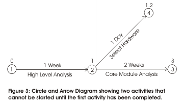
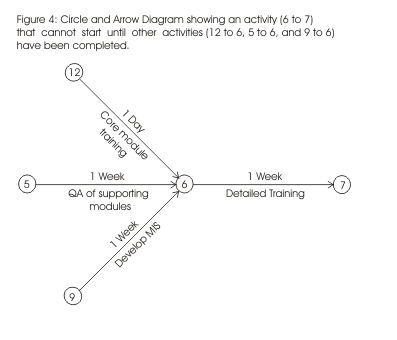
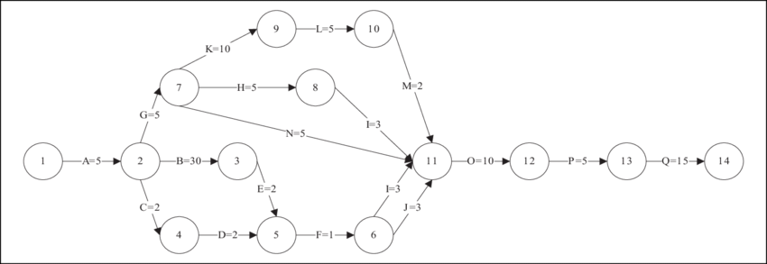
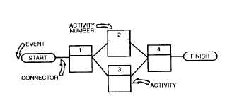
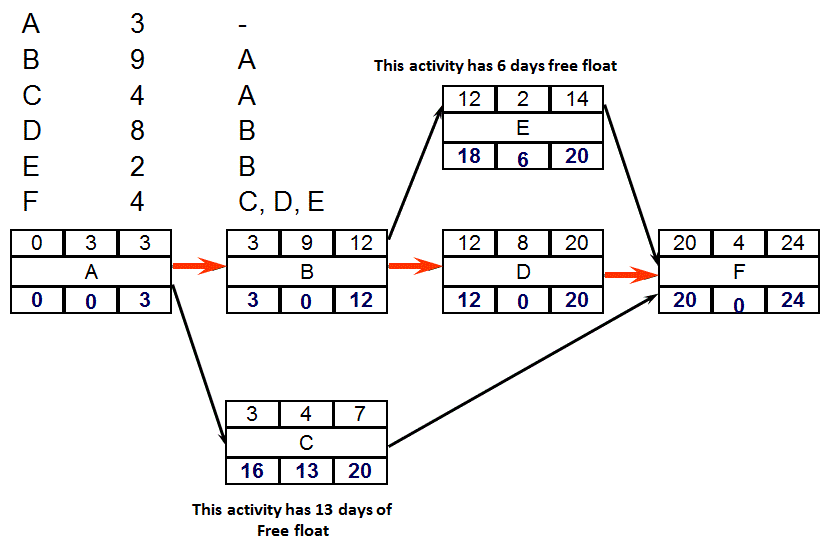
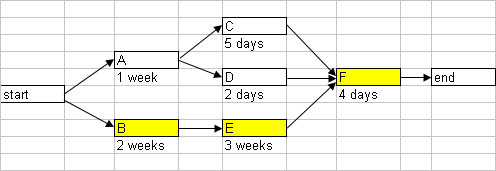
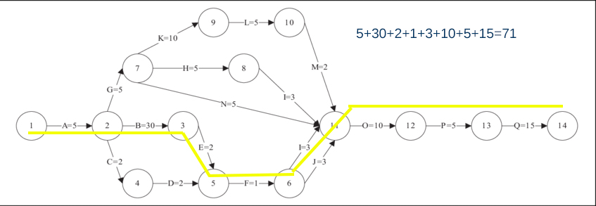
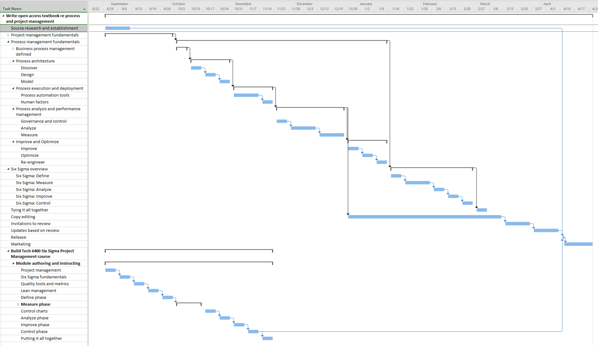
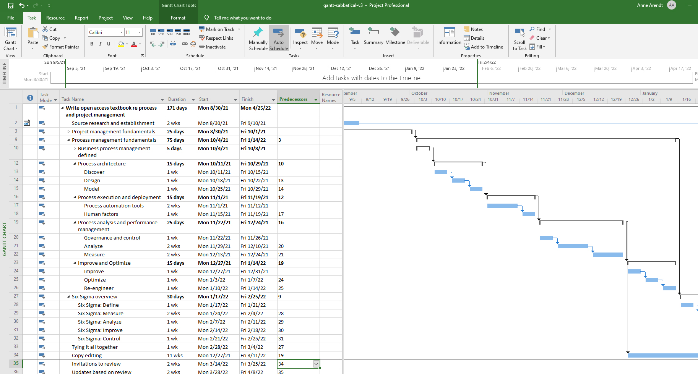

Project Management: Time and Schedule Management
Project Time and Schedule Management
There are seven processes within schedule management:
- Plan schedule management–determining how time and schedule management will occur
- Define activities–identifying the specific activities that must be performed to produce the various project deliverables
- Sequence activities–identifying and documenting interactivity dependencies
- Estimate activity resources–estimating the necessary resources for each activity and ensuing their is not overlap
- Estimate activity durations–estimating the number of work periods that will be needed to complete individual activities
- Develop schedule–analyzing activity sequences, activity durations and resource requirements to create the project schedule.
- Control schedule–controlling changes to the project schedule
A project can be thought of as "a microcosm or a macrocosm. At any level in the work breakdown structure, from the standpoint of the manager in charge of a particular part of a project, there is a separate project that he or she is responsible for. All projects are part of some larger proejct and all projects have subprojects within them. It is just a matter of perspective." (Newell, 26) Good project management techniques will work on any size project or program. The tools and methodologies are similar on all projects. In order to see how the work actually breaks down into units and individual pieces of work to be performed a work breakdown structure is developed.
Define activities
Project work needs be broken down into discrete tasks that can then be time-estimated and allocated appropriate resources. Project activities need to be identified and their scope of effort quantified. Activities and their subsequent tasks and subtasks are specific actions to be performed to produce the project deliverables (what we are doing or activities we are engaging in). Larger work packages/areas are broken into schedule activities/tasks/sub-tasks that provide a basis for estimating, scheduling, executing, monitoring, and controlling the project work. Durations are task time estimates from start to completion.
duration, effort, and span
Duration is the length of time it will take to complete the project or components of the project. In some cases you will experience duration compression, which is the shortening of the schedule without reducing project scope. In most cases this requires additional project cost.
Usually duration is developed when you are estimating the cost of the project. A common terminology is to use effort to define the number of people-hours needed to do a particular task. It is the length of time it takes to do a task whether it is one person or more than one.
Span, on the other hand, is the time that elapses between the start and the finish of the activity.
So for example if we have:
Monday: Mary and Mark
Tuesday: Jane
Wednesday: Leroy and Bruce
The duration is three days, the span is three days, and the effort is five people-days. If we have:
Monday: Mary and Mark
Wednesday: Jane
Friday: Leroy and Bruce
The duration is still three days, but now the "span" is five days, and the effort is five people-days.
Define predecessors, dependencies, and milestones
A Gantt chart is "a graphic display of schedule-related information. In the typical bar chart, activities of other project elements are listed down the left side of the chart, dates are shown across the top, and activity durations are show as date-placed horizontal bars." (Newell, 2002, p. 391) A Gantt Chart can also be used to show precedence by using predecessors. Predecessors basically say what has to occur before another task can occur. Henry Gantt, an American engineer, created the Gantt chart in 1917. He developed the chart to help in the production flow. Henry Gantt is best know for this chart, however, he also was key in developing more humanistic theories on management and his emphasizing better working conditions and its effect on the psychology of workers.
Sample Gantt chart from MS Project:
When one task must be completed before another task can be started, the first task is said to have precedence over the other. Precedence relationship (predecessors) is the term used in the precedence diagramming method for a logical relationship. In current usage, however, precedence relationship, logical relationship, and dependency are widely used interchangeably regardless of the diagramming method in use.
A dependency is when something cannot be done without something else being done. A milestone is an important goal date or a checkpoint in the project, such as a task completion date. When reached, a milestone is often treated as a time to celebrate.
There are four forms of precedence relationships:
- Start of activity depends on finish of preceding activity, either immediately or after a lapse of time
- Finish of activity depends on finish of preceding activity, either immediately or after a lapse of time
- Start of activity depends on start of preceding activity, either immediately or after a lapse of time
- Finish of activity depends on start of preceding activity, either immediately or after a lapse of time.
Work Breakdown Structure
As an output from scope definition you you should also end up with a work breakdown structure (WBS). Work breakdown structure (WBS) development is the process of subdividing and diagraming project deliverables (what we are making or components of the deliverable) and definable related project work into small manageable components (activity list - what we are doing). The WBS describes the critical tasks and milestones that need to take place from the start of your project to the end. This entails sequencing project activities (tasks and sub-tasks), identifying the resources you need for the project, estimating the duration of each activity/task/subtask, and identifying dependencies. Key characteristics of a work breakdown structure include hierarchical levels of work, a numbering sequence, and basic descriptions that are expressed using verbs and objects since they are actionable.
In a work breakdown structure, every item level as a unique number assigned to it so it can be identified and tracked over time. Often there is a top-level categorization with sublevels that are subordinate. Typically work breakdown structure fires are either deliverable oriented or process centered. A deliverable-oriented WBS is built around the project’s desired outcomes or deliverables. A process-centered WBS is organized, at the highest level, by phases or steps in a process rather than by deliverables.
A work breakdown structure is usually in chart format, that organizes and defines the total work scope of the project. Each descending level represents an increasingly detailed definition of the project work. Work not in the WBS is outside the scope of the project. The lowest level in a WBS may be referred to as a work package, work element, or phase. The detail should be sufficiently detailed to allow the project manager and team to reliably estimate schedule and cost. A work breakdown structure is usually most successful when there is engagement of project team members in comprehensively identifying and discussing activities for the project. All work should have clearly defined duration, resources, dependencies, and level of effort.
Exactly how you format your timeline of activities will depend on your particular project and what is involved with it. You could create a table, spreadsheet, list or a graphic that displays the project components. As you complete projects, you will develop a preference that works best for you and your team. But almost all schedules should include:
- Task and sub-tasks
- Description of Tasks
- Deliverables
- Checkpoints
- Responsible Team Members
- Estimated Hours to Complete
A good way of developing your project WBS is by using the major milestones/deliverables that you identified. There is no set number of levels in a WBS nor is there a set structure. It is also not a "To Do" list of every possible thing we can think of that needs to be done in the project. Rather it is the assignments we will hold members of the project team accountable for delivering. If you are unsure where to start, a good option is to use basic project phases such as: initiation, planning, execution, control, closeout. As Newell notes, "the work breakdown structure is the most central item in the project plan." (Newell, 2002, p. 25) A work breakdown structure is defined as "a deliverable-oriented grouping of project elements that organizes and defines the total work scope of the project. Each descending level represents an increasingly detailed definition of the project work." (Project Management Institute, 2000, p. 209) You keep breaking the project down until the desired level of detail is reached. This level is called the work package level. A work package can be broken down further by the project team members involved into activities, but the work package itself is the lowest level that the project manager needs to be able to manage all aspects of the project (including costs, human resource allocation, quality, and the like).
View some good WBS template ideas created by Project Management Docs
The sample WBS below was taken from http://www.nnh.com/ev/wbs2.html
{kind=link}
Creating a WBS is a straightforward task. Basically you break your project down into sub-projects, and then just keep breaking each level down until you get to your desired level of detail. You may elect to have multiple WBS charts organized in different ways (such as by functional unit, by task, or by phase) however if you do, make sure the information communicated is the same in all diagrams.
Some sample work breadown structures can be found at:
Discussion point: In what ways are tools and methodologies similar on all projects?
network diagrams
Network diagrams are a way of activity sequencing and visualizing relationships. Like a Gantt Chart, it shows a chronology as it relates to tasks and events. Simply defined, a network diagram is a schematic display of the sequential and logical relationship of the activities which comprise the project. It is a graphic representation of project data in which the project logic and sequence is the sole determinant of the placements of the activities in the drawing. The two most common methods of network diagramming are arrow and precedence diagramming, which will be described further below. In each base, activity boxes are connected together with one-way arrows to indicate precedence. The first activity is placed on the left side of the diagram with the last activity on the right side. Activity boxes are usually placed at different levels (not in a single row) to accommodate activities that are done simultaneously. Network diagrams may also be reffered to as logic drawings or logic diagrams.
Once we have the durations and logic of a project we can actually build a schedule. Here are the steps advised by Newell (2002):
- Create a list of activities that are to be scheduled
- Assign a duration to each of the activities
- Determine the predecessor for each activity
- Calculate the forward pass, the early schedule for each activity
- Calculate the backward pass, the late schedule for each activity
- Calculate the float for each activity
- Determine the critical path
- Determine if the predicted project completion is ealier than the promise date
- Adjust schedule or promise date
- Apply resources and determine resource constraints
- Adjust the schedule to allow for resource constraints
- Determine if the predicted completion is ealier than the promise date
- Adjust schedule or promise date
- Get approval on schedule.
As described by Malsam (2020), network diagrams can be divided into two types, the arrow diagram method (ADM) and the precedence diagram method (PDM).
Arrow diagram method (ADM)
The arrow diagram method uses arrows to represent the project activities. The arrows connect nodes or boxes that are symbols of the start and finish of the activity in sequence. The tail of the arrow represents the start and the head represents the finish of the activity (the length of the arrow does not represent the expected duration of the activity; instead the duration is specified in writing along the length). Activities are connected at points called nodes (usually drawn as small circles) to illustrate the sequence in which the activities are expected to be performed:


Above images taken from http://www.mindtools.com/pages/article/newPPM_04.htm
Below is a complete sample arrow network diagram:

(Chui & Ip, 2017)
Precedence Network Diagramming Method (PDM)
In the precedence diagram method, each node or box is an activity. There are arrows, but in this case, they represent the relationship between the activities. Activities are linked by precedence relationships to show the sequence in which the activities are to be performed.
That relationship can be one of the following:
- Finish to start: This means an activity cannot start before another activity is finished.
- Start to start: Use this when two activities can begin simultaneously.
- Finish to finish: Use this when activities must finish together.
- Start to finish: Use this when one activity cannot finish until another one starts.
Below is a simple example of a precedence network diagram:

Each box will contain a task description and a timeframe. It may include detail such as the earliest start time, duration, earliest finish time, latest start time, float, and lastest finish time. Float, also known as slack, is the amount of time an activity can be delayed without delaying the project finish date. The format of content inside each box may vary form company to company or project to project. What is important is that it is understood by the team. (Jisc, 2012).
Below is a complete sample precedence diagram:

(Firebrand Training, n.d.)
PROGRAM EVALUATION AND REVIEW Technique (pERT) chart
Program Evaluation and Review Technique (PERT) was developed for project that come with a good amount of uncertainty in the durations of the tasks but you still need to have some form of an accurate schedule. It was created in the 1950's by the United States Navy when they were trying to develop a missile that could be launched from a submarine (and develop the submarine that could launch them).
PERT makes use of the normal probability distribution, "the normal probably distribution relates the event of something happening to the probability that it will occur. It turns out that by experiment, the normal distribution (bell curve) describes many phenomena that actually occur. The duration as well as the estimated cost of project activities comes close to matching normal distribution." (Newell, 2002, p. 70)

Thus, we just need to be able to determine three values: 1) best case optimistic, 2) worst case pessimistic, and 3) most likely
Once we know these we can then calculate the expected value and the standard deviation. For the expected value we just take the weighted average using this formula:
Expected value = [optimistic + pessimistic + (4 x most likely) / 6
Standard deviation = (pessimistic - optimistic) / 6
With these basic calculations we can determine the probable dates the project will have.
Lets say we are trying to create an estimate for clearing out a lot for construction of a new building. The lot does not have any known problems such as high chemical content , buried garbage or refuse, or similar. However, finding such obstacles is possible, although unlikely. Thus the company guesses it will take 2 weeks to clear the lot, but realizes if an unexpected obstacle is met it could take up to 2 months. If there are no problems and all operations flow smoothly with no weather inhibitions it could take as short as a week. Thus we have the following data:
Optimistic: 7 days
Most likely: 14 days
Pessimistic: 56 days
With this information we can determine that the expected time is actually 7+56+(4 x 14)/6 = 19.8 days
If we want to know how accurate this is we can look at our standard deviation: 8.17 days
Critical Path Method
The critical path method is a network analysis technique used to predict project duration by analyzing the sequence of activities that has the least amount of float. Using this method one basically allocates key or minimal resources to the critical activities first to make sure they are completed and don't hold up the project as a whole.
To create a critical path the first step is to ensure each activity is adequately defined. The activities are usually drawn from the work breakdown structure. Next, activity interdependencies need to be defined. In this process, dependencies of activities are identified when one affects another. The next step is to create a network diagram. It can be represented by an arrow diagram for a precedence diagram. in each case, each activity is given adoration with a time limit to complete the task. Once the network diagram has been created the activity durations and resources need to be clarified and listed. at this point some basic calculations must be done to determine the expected duration of the project, and the earliest start and finish dates for all activities in the project. At this point the critical path can be identified; it is the longest route through the network. It is critical because any increase in any of the tasks on the critical path will delay the whole project.
As Webopedia (n.d.) notes, "Abbreviated as CPM, a project management technique that analyzes what activities have the least amount of scheduling flexibility (i.e., are the most mission-critical) and then predicts project duration schedule based on the activities that fall along the “critical path.” Activities that lie along the critical path cannot be delayed without delaying the finish time for the entire project. Projects planned with CPM typically are graphically represented in a diagram showing how each activity is related to the others."
Here is a sample critical path:

Using the above arrow network diagram, this would be the critical path:

Gantt charts
In controlling tasks, their duration, and what has precedence some type of chart that shows timeframes and scheduling should be developed. A chart that is commonly used for this purpose is the Gantt chart, otherwise known as a bar chart. A Gantt chart is "a graphic display of schedule-related information. In the typical bar chart, activities of other project elements are listed down the left side of the chart, dates are shown across the top, and activity durations are show as date-placed horizontal bars." (Newell, 2002, p. 391) It can also be used to show precedence by using predecessors. Henry Gantt, an American engineer, created the Gantt chart in 1917. He developed the chart to help in the production flow. Henry Gantt is best know for this chart, however, he also was key in developing more humanistic theories on management and his emphasizing better working conditions and its effect on the psychology of workers.
A Gantt chart is created from the work breakdown structure (WBS) and is essentially a bar chart that tracks progress across time. A Gantt chart includes:
- Task/subtask names
- Timescales (hour, day, month, year)
- Start date
- Finish date
- Duration (calculated)
- Current date status
- Dependencies (usually)
- Milestones (usually)
- Resources (often)
It is a graphical representation of the time needed for different tasks inclusive of any applicable dependencies or concurrent tasks. Tasks or steps are listed down the left side of the chart. Then start and end times are plotted with bars. A Gantt chart, unlike some other tools, allows the manager to see when tasks (or projects) overlap, when peak periods occur, and when the start and ends of each task occur so resources can be allocated effectively. The Gantt chart is based on time versus other methods such as production, weight, volume, quantity, etc.The most common software for Gantt chart creation is Microsoft Project. However, there are multiple free versions of Gantt chart creation software including but not limited to: Project Libre and GanttProject.
Here is one example:

And here is added detail:

Gantt/Bar chart weaknesses:
A drawback to note with the Gantt chart though is that although it shows progress and performance to schedule, you can not easily ascertain specific problems such as an individual person being a bottleneck. Here is a sample Gantt chart:
- Does not show relationships between project activities
- Does not identify activities which control a project's total duration (i.e., critical activities comprising critical path)
- Does not relate delay or change of one activity to the entire project (task dependencies)
References
JISC (2012). Scheduling, precedence diagramming, and the critical path. Retrieved August 11, 2022 from https://www.jisc.ac.uk/guides/project-management/scheduling-precedence-diagramming-and-the-critical-path
Newell, M. (2002). Preparing for the Project Management Professional Certification Exam.